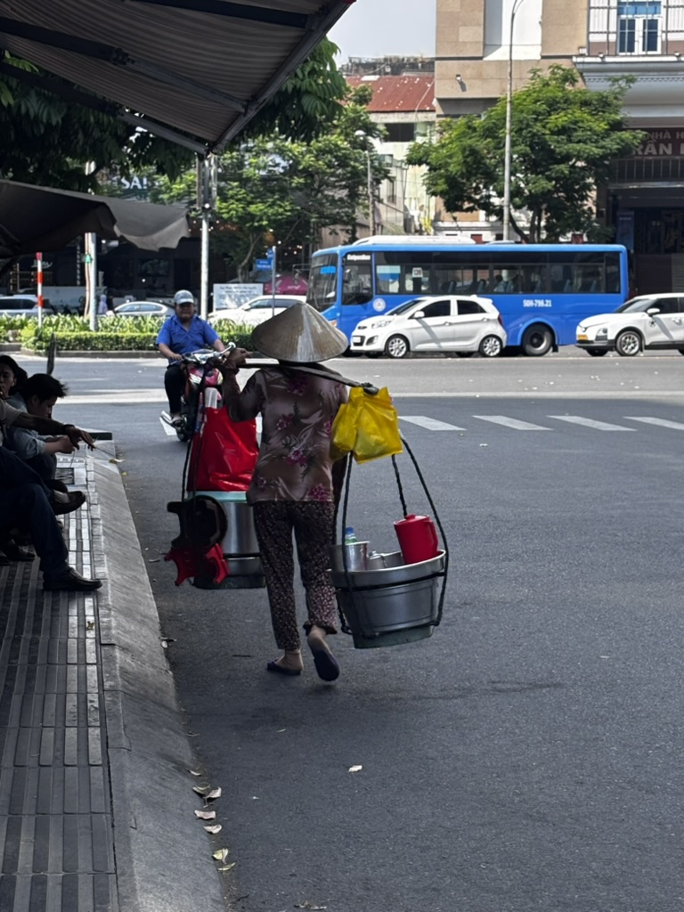
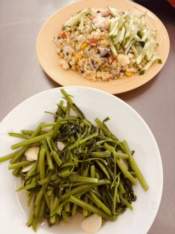
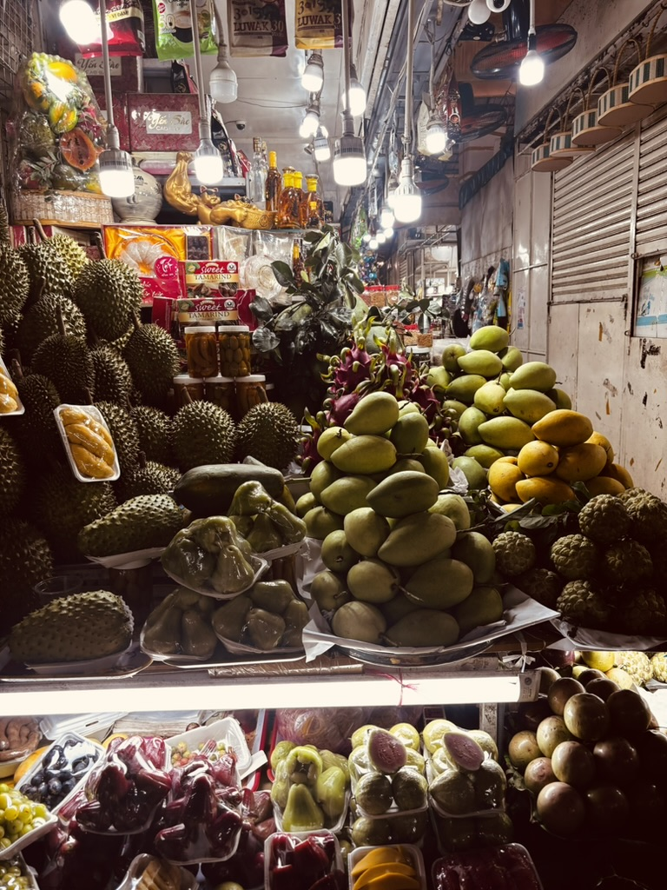
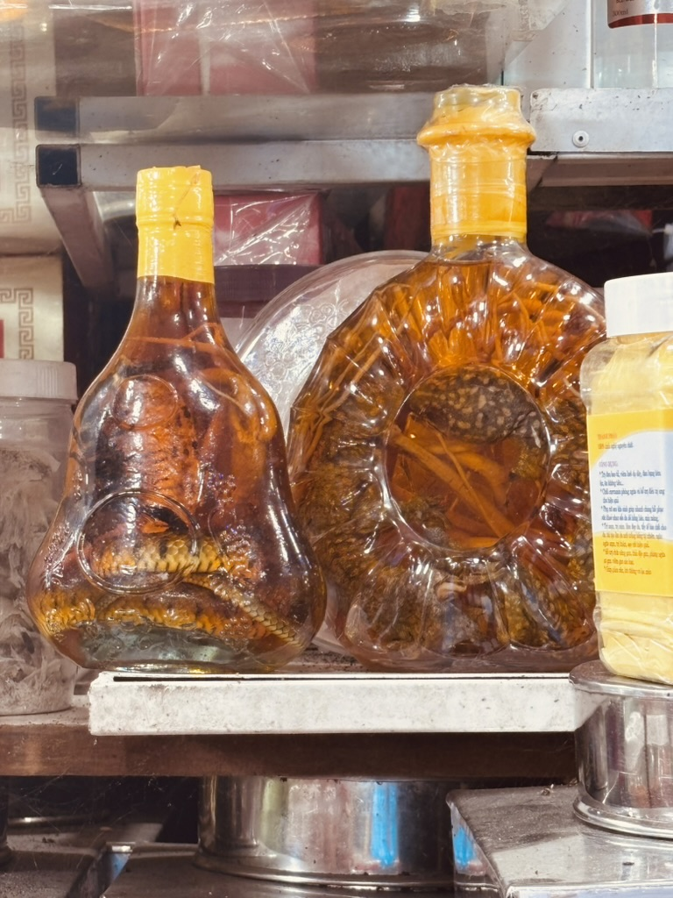
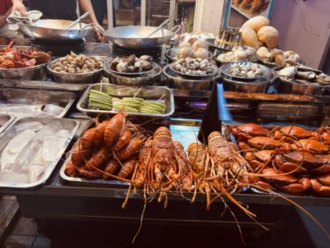

There is a version of Vietnam that travel blogs sell you — the one with rice terraces and lanterns and perfectly filtered bowls of phở. That version exists. But what nobody tells you before you get there is how relentlessly alive the place is at street level, at every hour, in ways that have nothing to do with the photographs.
I went for three weeks with a laptop, a carry-on, and a budget that made my friends at home raise an eyebrow. I came back having eaten better, worked more efficiently, and spent less money than I do in a single week in most European cities. Here is what it actually looks like.
The street runs on its own logic
The first thing you notice in Vietnam is the movement. The streets don't pause — not at 7am, not at noon, not at 11pm. There is always someone going somewhere, carrying something, selling something, eating something. The city has a pulse that you feel before you understand it.

Daily life, mid-stride. She's been doing this longer than the city has been this busy.
I watched a woman carry an entire mobile kitchen through three lanes of traffic on a pole across her shoulders — two containers of food, a small gas burner, a stool — and set up lunch for six people in the time it took me to find a seat. The logistics of street food in Vietnam are extraordinary. Everything is in motion and nothing is wasted.
As a remote worker, this matters more than it sounds. When your office is wherever you open your laptop, the energy of the city around you becomes part of your workday. Vietnam's energy is high and purposeful. It got into me in a useful way.
The food problem (there isn't one)
I want to be direct about the food because people ask about it constantly and the answer is simple: eating well in Vietnam is not something you have to figure out. It figures itself out. The question is not where to find good food — the question is which of the twelve good options on this block you feel like today.

Morning glory, stir-fried with garlic. The dish I ordered so often it stopped being a choice and became a reflex.
Morning glory — rau muống in Vietnamese — became my default order within the first three days. Water spinach, stir-fried fast over a high flame with garlic and sometimes chilli, served in a pile that costs roughly a dollar and tastes like it should cost much more. I ate it for lunch, I ate it as a side at dinner, I thought about it at breakfast. It is one of the best things I have eaten anywhere.
The fried rice next to it in that photo — also under two dollars, also excellent, also the kind of thing that recalibrates your sense of what food is supposed to cost. After a week of eating like this, paying €14 for pasta in a European city stops feeling like a reasonable transaction.
The market at night
Go to the market at night. I don't care which city you're in — find the market and go at night. The daytime version is good. The nighttime version is a different thing entirely.

The market at night. Every fruit you've heard of and several you haven't, all in the same arm's reach.
The fruit market I stumbled into was lit by bare bulbs hanging over stalls stacked with durian, three varieties of mango, dragon fruit, soursop, mangosteen — everything at once, everything abundant, the vendors arranging and rearranging their displays with the focused pride of people who take what they do seriously. I bought more fruit than I could carry and ate most of it walking back through the streets.
Markets in Vietnam are also where you start to understand the actual economy of daily life. Nothing is hidden, nothing is packaged for tourist consumption. You are just in the middle of the thing, which is the best place to be.
The thing in the bottle
At some point in most Vietnamese markets, you encounter the snake wine. Bottles with whole snakes coiled inside — sometimes one, sometimes two, sometimes a snake and something else I couldn't identify — preserved in rice liquor and sold as a medicinal drink. The name in the photo says it plainly: make the booze stronger, snake.

Snake wine. For strength, apparently. I am not a scientist but I am curious enough to have tried it.
I tried it. This is a thing you do, or don't do, and I am the kind of traveller who does it. The taste is roughly what you'd expect from strong rice liquor with a snake in it — sharp, herbal, with a finish that lingers in a way that makes you think something is definitely happening somewhere in your body. Whether it makes you stronger is unclear. Whether it makes a good story is not.
The seafood problem (also not one)
I have a rule when travelling: if there is fresh seafood available and it is cheap, I am ordering the seafood. Vietnam made this rule very easy to follow every single day.

Lobster at a price that made me read the menu twice. Then order twice.
The seafood stalls at the night markets — whole lobster, crayfish, clams, shells of every variety — are the kind of thing that resets your relationship with what luxury is supposed to mean. You sit on a plastic stool at a low table on the pavement, you point at what you want, someone cooks it in front of you, and you eat lobster for less than the price of a sandwich at a European airport. This happened to me more than once. I am not over it.
The actual numbers
People ask what remote work travel actually costs, so here is the honest version from three weeks in Vietnam:
Accommodation in a good guesthouse with reliable Wi-Fi ran between €15 and €25 per night depending on the city. Food was almost embarrassingly affordable — I averaged €8 to €12 a day eating well, including the nights I went for seafood. Coffee in a proper café with fast internet cost less than €2 and nobody ever asked me to leave. Local transport — buses, grab bikes, the occasional taxi — added up to almost nothing.
Total for three weeks including flights from Europe: roughly what two weeks in a mid-range European hotel costs, with better food, more interesting days, and a much more reliable internet connection than I have at home.
About the Wi-Fi
Remote workers always ask about connectivity and the answer for Vietnam is: it's fine, consistently and surprisingly fine. The café culture is strong and the understanding that people sit and work for hours is built in — nobody gives you a look for ordering one coffee and staying for three hours. The speeds are good. The coffee is excellent. The ambient noise is the sound of a city that is always doing something.
I worked every morning, moved every afternoon, ate well every evening. That rhythm, repeated for three weeks, produced some of the most productive and most enjoyable stretches I have had in years of working remotely. Vietnam suits the remote work life in a way that feels less like a compromise and more like an upgrade.
Come for the Wi-Fi. Stay for the morning glory. Leave knowing you ate lobster on a pavement and it was the best meal of the month.